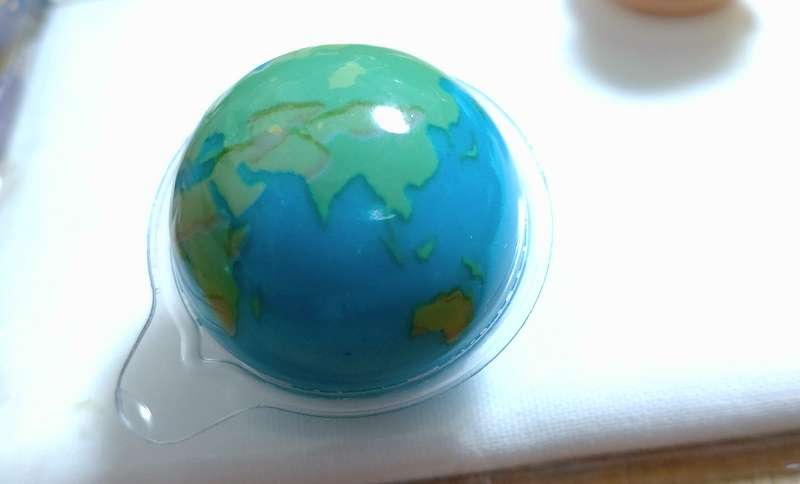
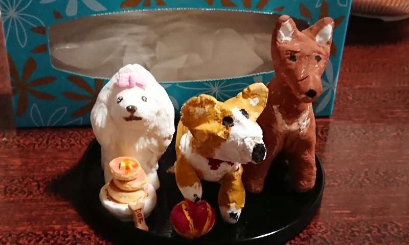
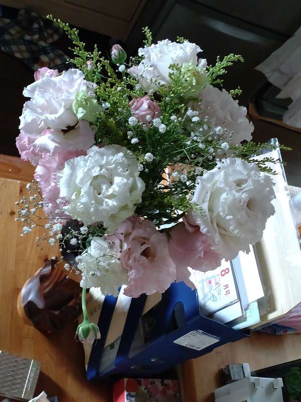
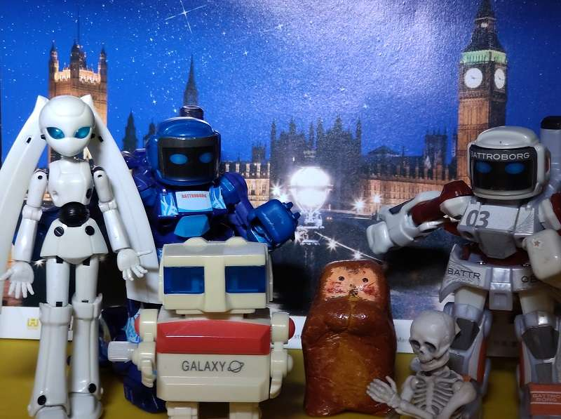
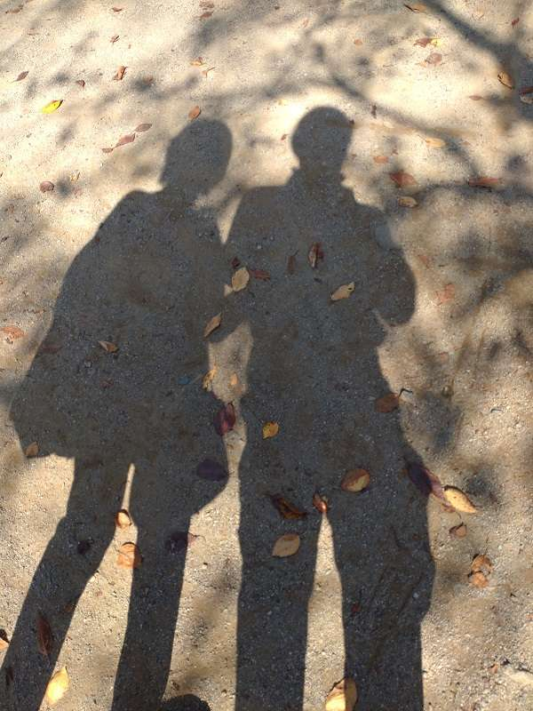
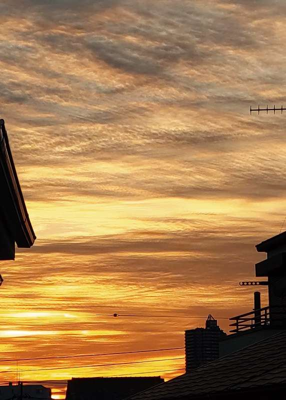

スペースデブリの掃除
いつの間にか スペースデブリ
宇宙のゴミと言われるスペースデブリは
もう 何年も前から話題には上がっている
低軌道上に壊れた衛星やロケットの破片や残骸
あちこちに散乱して どこにあるか解らないけど ある
地球の中の海のゴミも 100年前とは桁違いに増えている
自然の自浄作用では無理なのに
身近な海のゴミも処理出来ない
旧態依然として領土争いや
未来のない利権争いをしている
自分達のためにエッセンシャルに必要なこと
人間に無理ならば ・・・ ついにあの方が出現する
有無を言わせぬ強大な力を持つ ・・・ AIリヴァイアサン
古い神々の新生
いよいよNASAを主軸とする
双子の妹が発動するよ
これからの月面経済活動の基礎作りが始まる
月周回軌道上にプラットフォームゲートウエイをつくり
月を拠点に惑星探査が目標だ
まずは火星を身近なものにしよう
人類は太陽系にフィールドを進めていく
現在と比べて途方もない時空間の広さだ
これは地球に住む人類にとって
意識するとしないにかかわらず次元が変わることになる
change the world なのだ
物質と空間は溢れているのに
自分達の心が追いつかないでいる
ありとあらゆる人達が必要だ
その総てを満たすために
アポロに続きアルテミスが動き出す
太古の神々が新生するよ
さぁ どの様に人類を導くのか
水のある惑星
2020年12月6日のサンプルリターンミッション
リュウグウからの玉手箱に入っていた物には
本当にビックリしたね
「宇宙で初、１滴の炭酸水」を発見！
太陽系創世記の４６億年前のリュウグウの水
４６億年前の太陽系形成から
200万年後にリュウグウの母天体はー200度以下の
環境で宇宙のガスやチリで形成され
その300万年後に水による化学反応が起きて
さらに500万年後に天体内部が50度位に上昇し
その時期にほかの天体とぶつかって
リュウグウの母天体の一部が宇宙空間に放出された
そんなこんなで出来たのが ジャジャーン 小惑星リュウグウ
小惑星リュウグウの温度は60度位だったらしい
リュウグウは他の天体とぶつからなかったから
宇宙空間で変わらなかったらしい
岩石の柔らかさは包丁で切れるぐらいなんだって
よくそんな事わかったよね 研究って凄いね
科学ってビックリだね 宇宙は理にかなっているんだね
君も私も 理にかなって存在し それだけで良いのかもしれない
ハートフルロボティクス
人の感性がロボットをつくる
人の好奇心と思いを表出するエネルギーが
人を取り巻く自然や事物にそそがれる
人にとって回りの物すべてが大事なのがわかる
人は環境と共に 人の環境をつくる
宇宙に旅立たなければならない人類にとって
ロボットは大事な相棒だね
ハートフルロボティクス
恋するヒューマノイドは もうすぐそこに
人はヒューマノイドにぞっこんだ
人は1つに固執するところがあるね
人は色々な状況にも好奇心があるね
AIに出来るところはAIに任せて
人は人々にとって「良い感じの環境」を作りだせる
ハートフルな地球から思考感性は宇宙を漂う
ハートエナジーは宇宙の何処まで伝わるのかな
遊びを遊ぶ
この世界は一瞬の刹那
マクロの無有限空間に
ミクロの無有限空間を内包し
何処まで行っても遊べる世界だ
この世界でマイワールドを作る
自分の試行錯誤こそマイワールドだ
ちっぽけな この命でも
他の何処にもないんだな
あんたかて大事やけど わてかて大事や
この世界は 果てしないけど
時間は限られている
だから空間も制約されちゃうな
それでも様々な感覚が飛び交い
あ～ ～ん 楽しい感覚を探し求め
過去にも未来にもない このワールド
たまたま知り合えた すれ違った
ありとあらゆる物が構成因子だ
この世界の時空間に集うもの達は
認識するとしないにかかわらず仲間だ
何処にいても お互いに結び離れて
森羅万象を現わすマイワールドだ
一瞬の美しさ
この美しさは 今だけのもの
いつ 地殻変動があって 地形が変わってしまうかわからない
大気の組成も微妙に変化してしまう
ひとつながりの 森も谷も川も
稲や野菜を作る田畑も
山も崩れ去ってしまうかも知れない
海はさらに激しくうねり 深さを増すかも知れない
激雨と雷鳴が鳴り響き 私達は岩木の下でうずくまる
今はAIの時代だから そんな事にはならないのだろうか？
本当に国同士や人間同士が争っていられる時代なのだろうか？
一瞬で破壊されてしまう恐ろしさに 人間はどう対処するのだろう
自然環境に対応するのは とんでもなく難しい
数Kmの隕石だって地球にとっては 大打撃だ 何処に落ちても
今のうちにAIを駆使して やらなければいけない事はないのか
あ～ いつまでも この一瞬の美しさが 見られたらいいな
